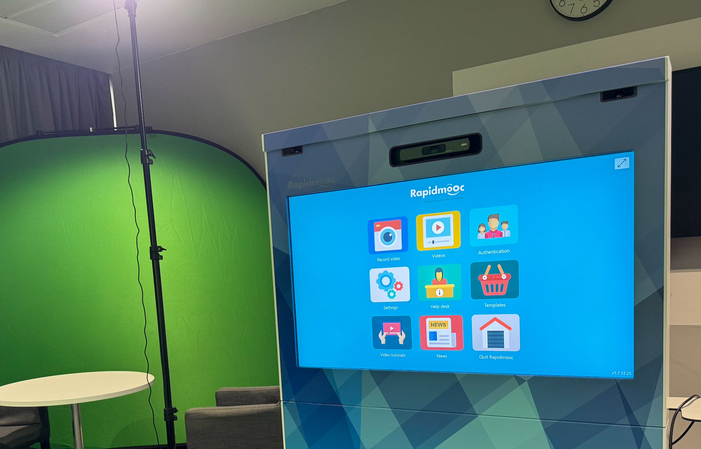

Helping colleagues tell their story.
How I put professional video production capability in the hands of colleagues across the business - no technical expertise required.
Date: 2024-25
Skills and technologies: RapidMooc Pro+ · Learning Glass · Video by Blackmagic Design · Audio by AKG and Audient
Before the Learning Experience Studio was commissioned, video production meant joining a long queue for my company's London-based design team, or settling for low-quality webcam recordings. The result was that video was either inaccessible or not worth the effort.
I led an initiative to change that. Not by training people to become video producers, but by designing an environment where the technology got out of the way.
The studio uses a touchscreen system that handles framing, recording, and basic editing in one interface. I created digital training guides, accessible via QR codes printed on the side of the machine, so anyone could walk in, scan, and start recording within minutes. No technical background required.

The studio removed a bottleneck that had been slowing teams across the business.
Health and safety training for our vehicle repair network - previously dependent on an instructor travelling to each site - could now be created as professional on-demand video, reducing delivery costs and reaching a population that had previously been difficult to serve.
Teams who had never considered creating their own learning content were recording, editing, and publishing independently. The L&D team stopped being the gatekeeper and started supporting teams to create their own content.
The most meaningful content to come out of the studio had nothing to do with training. Partnering with the Diversity Trust, the studio became a space for colleagues to share their own stories - LGBTQ+ experiences, faith, family, caring responsibilities. These weren't polished corporate messages, but became some of the most resonant material we created.
The studio also captured content from our Talent Acquisition team and members of the Neurodiversity & Disability Employee Community for Recruitment Ready - a project that went on to win Gold for Best Internal Learning Solution at the 2026 LPI Awards.
When you give people the right platform and make it easy to use, they share the things that matter.